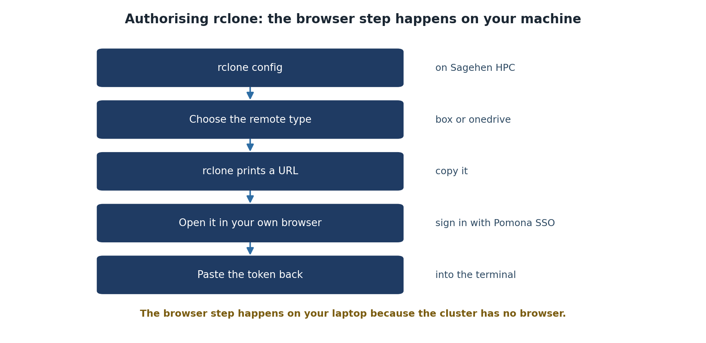

Installing and Configuring rclone
Last updated on 2026-08-27 | Edit this page
Overview
Questions
- How do I load rclone on Sagehen HPC?
- What is SSH port forwarding and why do I need it?
- How does the rclone configuration process begin?
Objectives
- Connect to Sagehen with SSH port forwarding for OAuth
- Load the rclone module on the HPC cluster
- Understand the rclone configuration workflow
Prerequisites
Before starting, make sure you have:
- SSH access to Sagehen HPC system
- A Pomona College NetID and either a Box or OneDrive account
- A terminal application (Terminal on Mac/Linux, PowerShell or Git Bash on Windows)
- A web browser for OAuth authentication
- Approximately 15 minutes

Step 1: Connect to Sagehen HPC with Port Forwarding
SSH Port Forwarding for Secure OAuth Authentication
The first step is to establish an SSH connection to Sagehen with port forwarding enabled. This creates a secure tunnel that rclone will use for OAuth authentication.
For Mac/Linux Users:
Open your terminal and run:
Replace username with your Pomona NetID (e.g., jsmith@sagehen.hpc.pomona.edu).
When prompted, enter your Pomona password.
Expected output:
Last login: Wed Mar 05 2026 13:45:02 -0700 from 192.168.1.100
[username@login-1 ~]$For Windows Users (PowerShell):
If SSH is not available, use PuTTY or Windows Subsystem for Linux (WSL).
VS Code Remote SSH Users:
If you typically use VS Code’s Remote-SSH extension, you can still use SSH with port forwarding by:
- Option A: Use a separate terminal window (recommended for rclone setup)
-
Option B: Modify your
.ssh/configto include the port forwarding:
Host sagehen
HostName sagehen.hpc.pomona.edu
User username
LocalForward 53682 localhost:53682Then connect with ssh sagehen.
You are now connected to Sagehen. The terminal prompt shows you’re on the HPC system.
Step 2: Load the rclone Module
Once connected to Sagehen, load the rclone module:
Expected output:
Loading rclone/1.65.2 ...Verify rclone is available:
Expected output:
rclone v1.65.2
- os/version: linux (Linux 6.8.0-94-generic #94-Ubuntu 22.04.1-generic)
- go version: go1.20.3The version number may differ depending on the module version, but you should see rclone is ready to use.
Step 3: Start rclone Configuration
Now you’ll begin configuring rclone:
Expected output (first run, no config yet — a short three-option menu):
NOTICE: Config file "/rhome/<myusername>/.config/rclone/rclone.conf" not found - using defaults
No remotes found, make a new one?
n) New remote
s) Set configuration password
q) Quit config
n/s/q>Once you have remotes configured, the same command shows the longer
e/n/d/r/c/s/u/m/v/b/q menu with your remotes listed at the
top.

module load rclone && rclone version (v1.62.2 on
Rocky 8.10), then rclone config with the fresh-config
menu.Type n to create a new remote. In the next episodes,
you’ll complete the configuration for Box or OneDrive.
Saving Your Configuration
Protecting Your rclone Configuration
rclone stores your configuration securely on Sagehen:
Location:
~/.config/rclone/rclone.conf
This file contains your OAuth token and configuration. It’s encrypted and should not be shared. Never commit this file to Git or upload it publicly.
Challenge 2.1: Connect and Load rclone
After connecting and loading the module, rclone version
should display something like:
rclone v1.65.2
- os/version: linux (Linux 6.8.0-94-generic #94-Ubuntu 22.04.1-generic)
- go version: go1.20.3The exact version number may vary. Seeing any version output (no
errors) confirms rclone is loaded and ready. If you get
rclone: command not found, you forgot to run
module load rclone.
- SSH port forwarding (-L 53682:localhost:53682) enables secure OAuth authentication between your browser and Sagehen
- The rclone module must be loaded with
module load rclonebefore use on Sagehen - rclone configuration is stored securely in ~/.config/rclone/rclone.conf and should never be shared
- The
rclone configcommand starts an interactive setup wizard for adding cloud storage remotes